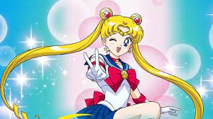
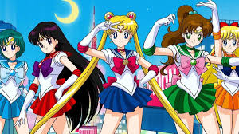

Why Is Sailor Moon My Favorite?
greetings! and welcome to my website. page is based my love for the anime called sailor Moon. starting in the early 90's,sailor moon starts off as story about a young teenage girl who in her past life was a queen of the moon but as the story moves forward, she sent to earth as a regular teenage with no memory of her ever being a queen. eventually later she eventually gained her memory once she ran into her friends that once served to protect her against any evil that came her way.

as you can see in the second picture below,her friends whom once served to protect her named after our solar system,sailor mars (RED),
sailor Venus (orange),sailor Mercury and Sailor Jupiter (green).
Info about Sailor Moon

- href=https://www.w3schools.com/html/default.asp" target="blank">HTML Tutorial
- CSS Tutorial /li>